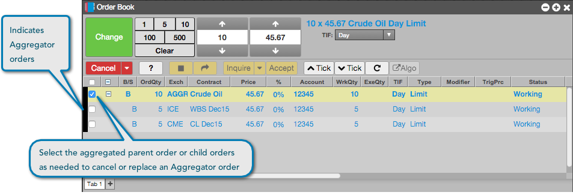
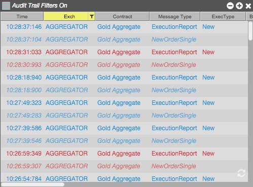

Your Aggregator orders appear in the Order Book and Fill Window. You can select and modify the parent order for the aggregated instrument, or the individual child orders for each leg market. Aggregator orders can be filtered in the Exch column. The color bar appears in the left column of the Order Book to indicate Aggregator orders.

Trade reports are also sent to the Audit Trail. To make it easy for you to find them, you can choose Aggregator as a filter in the Exch (Exchange) column.